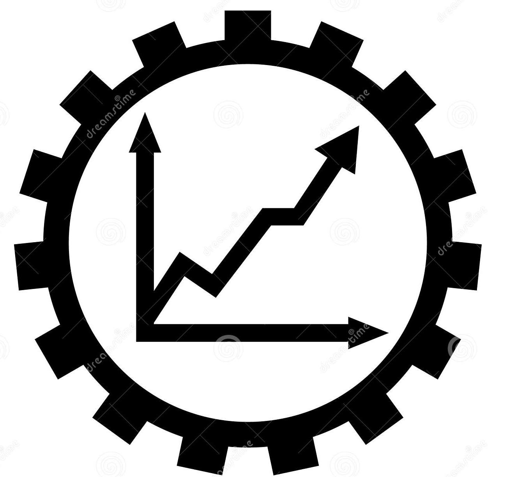
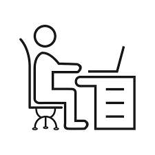

VANTAGGI
-
Professioni
Nasconono nuove figure lavorative più specializzate nell'utilizzo e implementazione delle tecnologie, più creativi e basati sulle relazioni umane -
 Produttività
La produttività nel lavoro crescerà notevolmente grazie all'intelligenza artificiale, all'innovazion tecnica ed ai computer quantistici -
Benessere
Il benessero comune crescerà, rendendo più accessibili le risorse
SVANTAGGI
-
 Lavoro
Le macchine potrebbero sostituire gli uomini nei lavori più complessi e intelletuali.Anche nei lavori che richiedono qualifiche (medici, avvocati, impiegati) gli uomini verranno sostituiti dalle macchine -
Ricchezza
Il divario economico aumenterà ancora di più e la ricchezza sarà distribuita meno omogeneamente